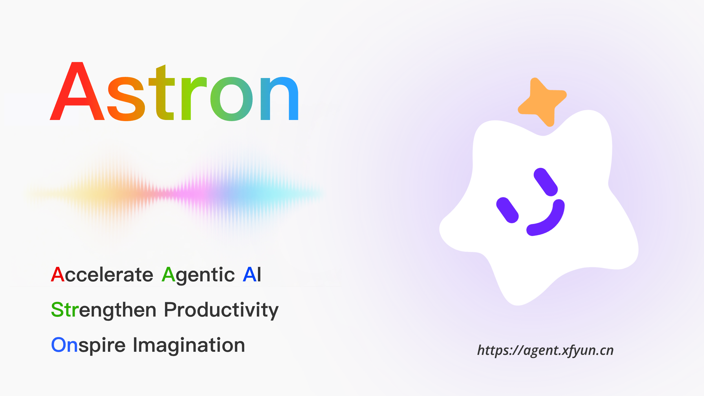
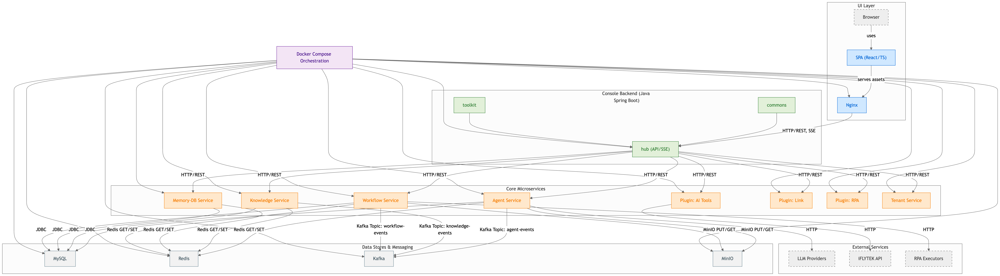
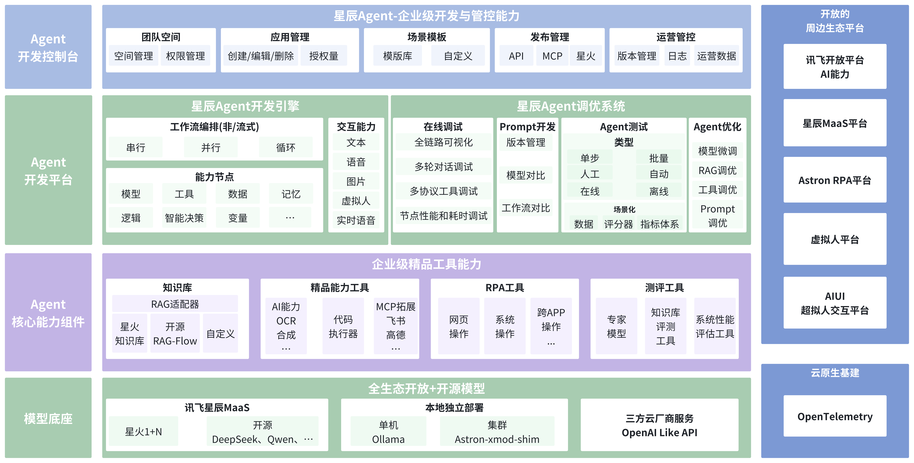

企业级高可用
覆盖开发、构建、配置、部署与治理流程，适用于企业内外网及复杂运行环境。
Astron Agent 聚合 AI 工作流编排、模型管理、MCP 与工具集成、RPA 自动化以及多团队协作能力， 帮助企业以更低成本快速构建高可用、可扩展、可运营的智能体应用。

面向高可靠部署、跨系统连接与业务落地，提供从平台底座到业务编排的完整能力。
覆盖开发、构建、配置、部署与治理流程，适用于企业内外网及复杂运行环境。
支持从 API 快速验证到企业级 MaaS 与私有化模型集群部署的多种接入方式。
兼容多类 AI 能力与工具调用模式，帮助 Agent 高效调用外部能力与业务系统。
让 Agent 不止能分析和决策，还能跨系统执行流程，实现自动化闭环。
采用 Apache 2.0 协议发布，可自由修改、分发和商用，便于企业长期演进。
控制台、核心服务、知识、记忆、租户、插件与部署配置解耦，便于扩展和维护。
前端、控制台后端、Agent / Workflow / Knowledge / Memory / Tenant 等服务职责清晰，适合多团队协作开发。

控制台前后端、核心执行引擎与插件系统协同工作，形成端到端的智能体平台能力。

仓库涵盖 React + TypeScript、Java Spring Boot、Python FastAPI 与 Go 服务，支持模块化演进。
推荐先使用 Docker Compose 快速拉起整套环境，后续再根据需要切换到 Helm 与 Kubernetes。
git clone https://github.com/iflytek/astron-agent.git
cd astron-agent/docker/astronAgent
cp .env.example .envdocker compose -f docker-compose-with-auth.yaml up -d默认可访问 `http://localhost/`，Casdoor 管理界面位于 `http://localhost:8000`。
快速跳转到部署文档、配置文档、FAQ 与社区支持渠道。